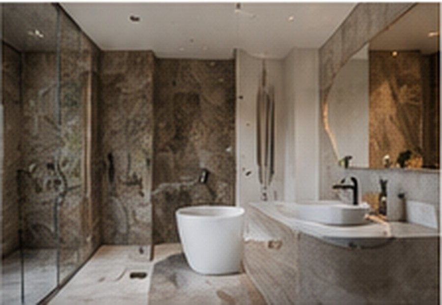

Many trades, one plan
Plumbing, electrical, cabinetry, tiling and finishes need to follow the same sequence.
KITCHEN + BATHROOM / CAPE TOWN
Focused interior projects still involve multiple trades, finishes and decisions. Coordination is what turns them into a clean result.
Kitchens and bathrooms depend on tight coordination between services, finishes, fixtures and installation sequencing.
Northline treats these rooms as focused construction projects, with selections and trade sequencing planned before the final finishes go in.
Plumbing, electrical, cabinetry, tiling and finishes need to follow the same sequence.
Fixtures and finishes should be confirmed early enough to avoid unnecessary delays.
Small alignment and finish issues are highly noticeable in kitchens and bathrooms, making final quality review essential.

HOW NORTHLINE APPROACHES IT
Focused interior work deserves the same project control as a larger renovation, especially where multiple trades and visible finishes meet.
The best first conversation starts with the room, the scope, the desired finish level and any drawings or inspiration already available.
Share your location, approximate scope, budget range, timing and any plans or photos that help explain the project.
START A PROJECT →